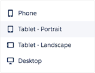
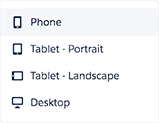

<div class="row monitor-height customize-page-layout">
  <div class="col-lg-12 monitor-height">
    <div class="row monitor-height">
      <hotspots-container>
        <wizard name="monitor" on-finish="finishedWizard()">
          <wz-step>
            <div class="step step-0">

            </div>
          </wz-step>
          <wz-step>
            <div class="step step-1">
              <div class="click-box" ng-click="activatedropdown()" ng-class="{active:!dropdown.active}" ng-show="!dropdown.active"></div>
              
              <div class="click-box-1" ng-class="{active:dropdown.active}" ng-show="dropdown.active" ng-click="Next()"></div>
            </div>
          </wz-step>
          <wz-step>
            <div class="step step-2">
              <div class="click-box" ng-click="activatedropdown2()" ng-class="{active:!dropdown2.active}" ng-show="!dropdown2.active"></div>
              
              <div class="click-box-1" ng-class="{active:dropdown2.active}" ng-show="dropdown2.active" ng-click="Next()"></div>
            </div>
          </wz-step>
          <wz-step>
            <div class="step step-3">
              <div class="click-box active" ng-click="Next()"></div>
            </div>
          </wz-step>
          <wz-step success="true">
            <div class="step success">
              <li-center>
                <p>
                  
                </p>
                <h2>Success!</h2>
                <p>
                    You know your page will look great across devices. Now you are ready to publish your app.
                </p>
                <p>
                  <a ui-sref="deploy-your-app" class="btn btn-rounded active">Continue</a>
                </p>
              </li-center>
            </div>
          </wz-step>
        </wizard>
      </hotspots-container>
    </div>
  </div>
</div>
